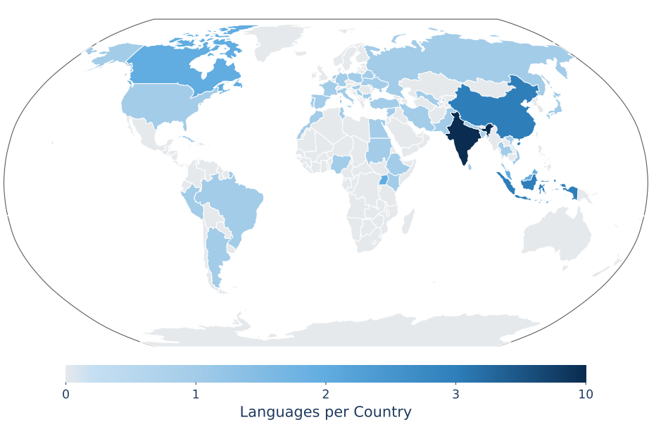
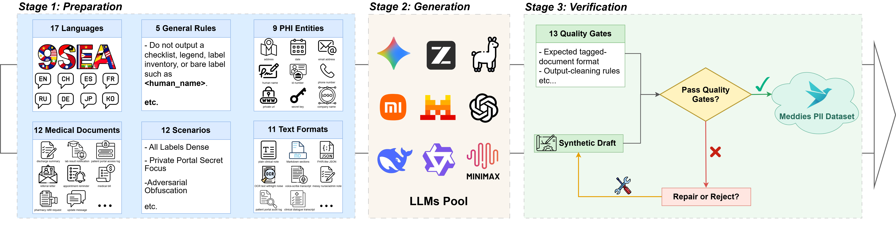
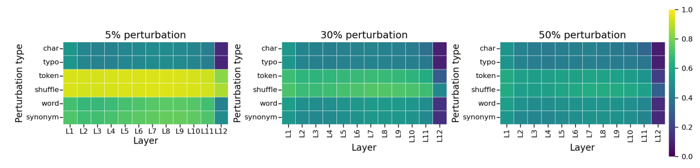
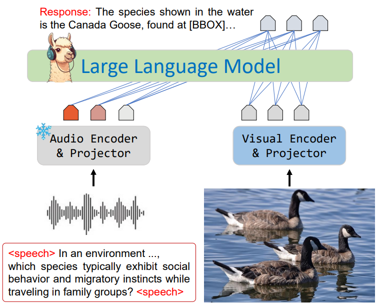

Publications
MultiCulturalRiddle: A Multicultural Benchmark of Riddles

Capturing how well LLMs can understand and model the diversity of cultures around the globe has increasingly gained importance as LLMs' language coverage has rapidly advanced. However, existing benchmarks are still knowledge- and English-centric with limited coverage and complexity. We propose MultiCulturalRiddle, a benchmark of culturally-grounded riddles, spanning 61 cultures and 51 languages, created in a participatory community effort. These riddles are both hyper-specific to each culture, require factual knowledge, language skills, social knowledge, and strong abductive reasoning skills to solve. We benchmark 24 LLMs with both automatic and human evaluation and release all artifacts publicly.
Meddies-PII: A Multilingual Framework for Personally Identifiable Information Extraction in Clinical De-identification

Clinical de-identification depends on accurately identifying personally identifiable information (PII). However, manually annotated datasets are costly to build, and existing synthetic alternatives often provide limited generation details or use relatively simple synthesis strategies. We introduce Meddies-PII-Dataset, which contains one million synthetic clinical documents across seventeen languages and nine PII labels. Attribute-conditioned prompts generate the documents, and thirteen deterministic gates check their structural and annotation validity. To assess the dataset’s utility, we train Meddies-PII-Model, a BIOES token classifier. We compare it with existing PII extraction systems using exact-match entity-level F1. Meddies-PII-Model achieves the highest score among the evaluated systems on all reported benchmarks, with a mean F1 of 0.827 across fifteen external benchmarks compared with 0.658 for the strongest baseline. Upon acceptance, we will publicly release the dataset, benchmark, model, generation framework, and evaluation code to support research on multilingual clinical de-identification.
Last Translation Benchmark

For scientific progress, we need benchmarks that test the limits of state-of-the-art models, and evaluation methods that inform us about failure cases. As models get stronger, standard benchmarks for machine translation are approaching saturation. Further, automatic translation metrics are unreliable, vulnerable to reward-hacking and provide unactionable assessments. Even gold human evaluation is not problem-free, because it often lacks reproducibility, objectivity, and scalability. Overall, this prevents us from tracking objective progress in the field and identifying pathways for improvement. We introduce the Last Translation Benchmark, a collection of human-authored and peer-reviewed examples (texts, images, audio, videos) that break leading machine translation models. We also present a new evaluation approach: each example comes with handcrafted verification rules describing concrete failure cases on that example, therefore allowing reliable and actionable future evaluation. The Last Translation Benchmark is a live dataset that accepts ongoing contributions. The latest version is LTBv1, containing accepted contributions prior to September 1st 2026, with future releases planned as new data is continuously collected.
How Perturbations Propagate: A Multi-Level Analysis of Robustness in Large Language Models

Language models encounter typos, corrupted text, altered words, and disrupted token order, yet robustness is usually evaluated only through output behavior. We study how six naturalistic and synthetic input perturbations propagate through decoder-only language models at three levels: output behavior, hidden-state geometry, and attention-head function. We evaluate behavioral effects across four GPT-2 and two Qwen2.5 checkpoints by analyzing layerwise geometry using centered kernel alignment and intrinsic dimension, and examine attention-head responses in GPT-2. Perturbation types produce distinguishable metric profiles that are not fully captured by output measures and are only partly consistent across the tested checkpoints. Copying scores are especially associated with activation-patching recovery under token substitution and shuffling. Gradient-guided HotFlip perturbations also cause stronger behavioral and representational disruption than rate-matched random token substitutions in GPT-2; their behavioral effects are consistent across all six tested checkpoints. Our results show that robustness claims based on a single behavioral or representational metric can be misleading, and motivate multi-level evaluation of how perturbations alter language-model computation.
SilVar: Speech-Driven Multimodal Model for Reasoning Visual Question Answering and Object Localization

Visual Language Models have demonstrated remarkable capabilities across various tasks, including visual question answering and image captioning. However, most models rely on text-based instructions, limiting their effectiveness in natural human-machine interactions. Moreover, the quality of language models primarily depends on reasoning and prompting techniques, such as chain-of-thought, which remain underexplored when using speech instructions. To address these challenges, we propose SilVar, an end-to-end multimodal model that leverages speech instructions for reasoning-based visual question answering. Additionally, we investigate reasoning techniques at different levels, including conversational, simple, and complex speech instructions. SilVar is built upon CLIP, Whisper, and LLaMA 3.1-8B, enabling more intuitive interactions by allowing users to provide verbal or text-based instructions. To this end, we introduce a new dataset designed to challenge models with speech-based reasoning tasks for object localization. This dataset enhances the model’s ability to process and explain visual scenes from spoken input, moving beyond simple object recognition to reasoning-based interactions. To our knowledge, SilVar is the first open-source, speech-driven VLM. We believe SilVar will inspire the next generation of multimodal reasoning models, advancing toward expert artificial general intelligence.